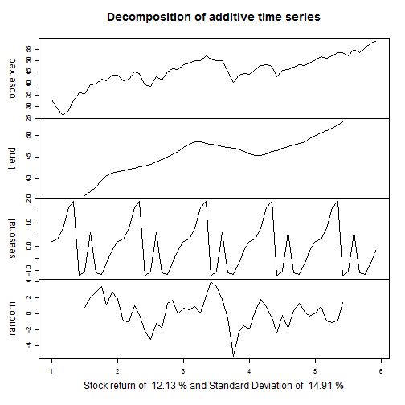
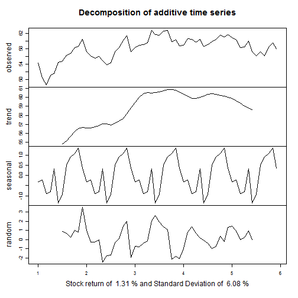
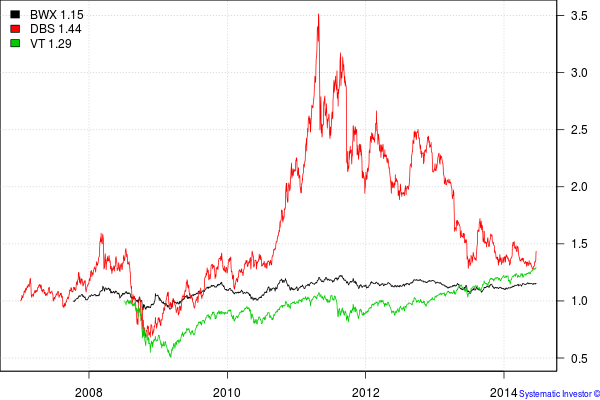

- Personal Introduction
- Fundamental building blocks of financial independence.
- Enhancing your Income
- Saving more money
- Investing for beginners
- How to retire before 40.
- Issues to consider before leaving the workforce.
Escaping the Rat-Race
Hacker's Edition
Christopher Ng Wai Chung
Author and Financial Blogger - treeofprosperity.blogspot.com
Overview
Personal Introduction
- Trained as an electrical engineer in 1999.
- Studied finance part-time in 2001 - Passed CFA exams in 2003.
- Published 3 books in personal finance while working as an IT project manager in P&G, HP, SMX, NTUC and IDA.
- Became financially independent at age 39.
- Will start law school this August.
Fundamental Building blocks of financial independence
- State of affairs where investment income exceeds living expenses.
- You can ramp down your work, reinvent yourself or simply do nothing with your life.
- Requires three skills of earning, saving and investing.
Enhancing your earnings.
- First key skill - enhancing your earnings.
- Know what job suits your personality - take the Gallup Strengthfinder. Know your MBTI. Know your OCEAN.
- Manuever your career to at least 8% increments. Perform better, work overtime.
- Increase business revenue, reduce business costs.
- If HR policy permits, moonlight.
- Build an app, write a book.
Effects on personality on income.

Saving more money
- Second key skill - totally within your personal control.
- Examine your monthly expenses. YNAB
- Cut down non-essential expenses. ( Eliminate vices, consolidate fixed expenses )
- Downgrade aggressively. Starbucks -> Kopitiam. Restaurant -> Hawker Centres
- Develop cheap hobbies like reading. Read about investment.
Investing for beginners
- Some risk must be taken to overcome inflation.
- Consider equity performance for your portfolio.
- Beginners can balance a portfolio among equities, bond and commodities.
- Observe concepts of risk and return. ( See Shiny App )
Behavior of World Equities

## NULL
Behavior of World Bonds

## NULL
Behavior of Commodities

## NULL
Correlation
- Correlation between stocks and bonds : 0.6553079
- Correlation between stocks and commodities : 0.7229404
- Correlation between bonds and commodities : 0.553332

How to Retire before 40.
- Stay with parents, stay single longer.
- Employ REITs, business trusts and high yielding equities to target 6-9% dividend yields.
- Use dividends to offset living expenses.
- Invest your salary into the markets.
- Aim to live solely on dividend income.
- Meet life goals of building a family.
Eg. $300,000 portfolio yielding 8% will give $24,000 a year ir $2,000 a month. This can sustain a single man.
- Need to comply with Securities and Futures Act. Cannot advise on which stock to buy.
Issues to consider before leaving the workforce.
- This process will usually take 15 years for a fresh graduate.
- Work will take up most of your life.
- You will need to consider your personal identity.
- How to spend your time meaningfully.
- You can buy happiness with money but that is also a skill set.
Financial Independence is within your reach.
- Work hard.
- Save Aggressively
- Know how to invest your money.
Any questions ?